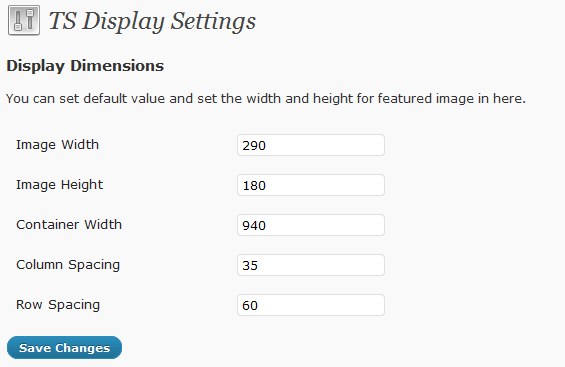

TS Display Wordpress Plugin
Plugin Documentation
First Things First
Please take the time to read through the instructions and take notice of the instructions listed here, as many support related questions can be answered simply by re-reading these instructions.
We will frequently update this theme for bug fix, add new features and more... please follow us on twitter to get notification.
If you still have a problems, please send a message to me via my profile page http://themeforest.net/user/templatesquare, please include the questions/problems, your site url and theme name.
— TemplateSquare
Table of Content
- Plugin Installation
- Display Content
- Display Shortcode
- Display Settings
- Shortcode Examples
1. Plugin Installation
- Unzip the zip file that you downloaded from themeforest and locate the 'ts-display' folders inside the 'plugins' folder. This is the folder and contents you will need to upload to your webserver.
- FTP Upload the 'ts-display' folders to your 'wp-content/plugins/' directory on your web server, then you can activate the plugin.
- After you activate the plugin, you will see 'Display' tab in left menu.
back to top
2. Display Content
Tutorial to add Display content
Add Display Category
- Click the 'Display' tab.
- Click the 'Display Categories' Sub Tab.
- Enter the category name of 'Display' in the name box.
- Click the 'Add New Category' button and you are done!
- You will see the category you just added in the right side area.
Adding display posts
- Click the 'Display' tab.
- Click the 'Add New' Sub Tab
- Start filling in the blanks.
- Select the 'Display' category in the right 'Display Category' section.
- 'Upload' and 'set featured image' for portfolio. This featured image will be used for portfolio thumbnail.
- Custom fields (optional)
- thumb: the value is the url of the thumbnail image.
If you add thumb custom field then it will not use the 'featured image' as the thumbnail.
- lightbox: the value is the full url of the image/video location.
- When you are ready, click Publish.
- You can add as many display posts as needed.
back to top
3. Display Shortcode
To use it, add a shortcode to a page like this:
[ts-display col="4" frame="square" showtitle="yes" showdesc="yes" showmore="yes"]
Otherwise, you can :
- Click ts-display icon shown below :
Screenshot 1: TS Display icon
- And you will see form like this :
Screenshot 2: TS Display form
- You can set the display from here. And click "Insert Display" to generate the shortcode.
- When you are ready, click Publish.
Options default value :
'col' => '3',
'postperpage' => '8',
'orderby' => 'date',
'cat' => '',
'frame' => 'default',
'fbordercolor' => '#d5d5d5',
'fbgcolor' => '#e9e9e9',
'showtitle' => 'no',
'showdesc' => 'no'
'showmore' => 'no'
'customclass' => ''
'contentwidth' => ''
'widthimg' => ''
'heightimg' => ''
'colspacing' => ''
'rowspacing' => ''
- col - [number]
Specify the number of columns. We provide 4 type of columns. if you input less than 1, it will change into 1. and if you input more than 4, it will change into 4.
- postperpage - [number]
Specify the number of post that you want to display in every page. if you input -1 it will show all posts.
- orderby - [string]
Specify the order of posts.
- cat - [string]
Specify the display categories that you want to show.
- frame - [string]
Specify the display frame that you want to show.
- fbordercolor - [hexa]
Specify the border color. This option is only for frame 2 and frame 3. default is "#d5d5d5".
- fbgcolor - [hexa]
Specify the background color. This option is only for frame 2 and frame 3. default is "#d5d5d5".
- showtitle - [boolean]
Toggle to show the title.
- showdesc - [boolean]
Toggle to show the description.
- showmore - [boolean]
Toggle to show the 'read more' link.
- customclass - [string]
You can add custom class. If you want to custom the layout.
- contentwidth - [number]
Specify how wide is your display container. Default value is from the TS Display settings.
- widthimg - [number]
Specify your image width. Default value is from the TS Display settings.
- heightimg - [number]
Specify your image height. Default value is from the TS Display settings.
- colspacing - [number]
Specify the space between 2 columns. Default value is from the TS Display settings.
- rowspacing - [number]
Specify the space between 2 rows. Default value is from the TS Display settings.
back to top
4. Display Settings
You can set some of shortcode default value in display settings.
- Go to Settings >> TS Display
- You will see TS Display form like the picture below.

Screenshot 3: TS Display Setting form
- You can set the default value from here. And click "Save Changes" if you finish.
back to top
5. Shortcode Example
Here is some example how to use the shortcode.
- [ts-display cat="one-column" col="1" postperpage="3" showtitle="yes" showdesc="yes" showmore="yes" contentwidth="940" widthimg="600" heightimg="300"]
Here is the link for the example above : http://demowp.templatesquare.com/plugins/ts-display/one-column/
- [ts-display cat="two-column" col="2" postperpage="4" showtitle="yes" showdesc="yes" showmore="yes" widthimg="440" heightimg="260" colspacing="60" rowspacing="70"]
Here is the link for the example above : http://demowp.templatesquare.com/plugins/ts-display/two-column/
- [ts-display cat="three-column" postperpage="6" showtitle="yes" showdesc="yes" showmore="yes" contentwidth="940" widthimg="290" heightimg="180" colspacing="35" rowspacing="60"]
Here is the link for the example above : http://demowp.templatesquare.com/plugins/ts-display/three-column/
- [ts-display cat="four-column" col="4" showtitle="yes" showdesc="yes" showmore="yes" contentwidth="940" widthimg="210" heightimg="150" colspacing="33" rowspacing="50"]
Here is the link for the example above : http://demowp.templatesquare.com/plugins/ts-display/four-column/
back to top